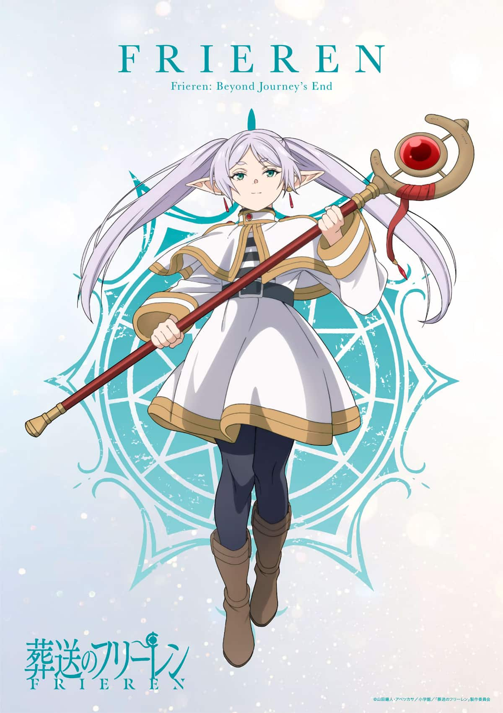

Quem é Frieren?
Frieren é uma elfa maga que fez parte do grupo de heróis responsável por derrotar o Rei Demônio. Por viver milhares de anos, ela percebe o tempo de forma diferente dos humanos e passa a valorizar as lembranças e os laços que constrói ao longo de sua jornada.
Explore o site para conhecer seus companheiros, descobrir mais sobre o universo de Sousou no Frieren e conversar com a personagem no chat.